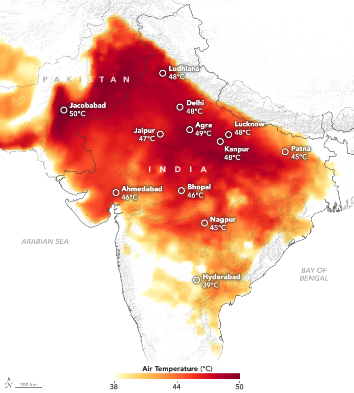
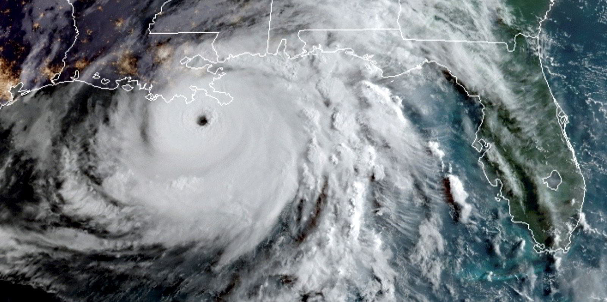

1. The most extreme heat wave in world history
Never in the century-plus history of world weather observation have so many all-time heat records fallen by such a large margin than in the historic late-June 2021 heat wave in western North America. The intense heat wave was the second-deadliest weather disaster of the year, with 1,037 deaths: 808 in western Canada and 229 in the northwestern U.S. The only deadlier weather disaster of 2021 was summer monsoon flooding in India that claimed 1,292 lives, according to insurance broker Aon.
Two examples of the insane extremity of the heat wave:
• Canada broke its all-time national temperature record on three consecutive days at Lytton, British Columbia, which topped out at a stunning 49.6°C (121°F) on June 29 – a day before the town burned down in a ferocious wildfire fed by the extreme heat. The
old Canadian heat record was 8°F cooler, 45.0°C (113°F) on July 5, 1937.
• Quillayute, Washington, broke its all-time high by a truly astonishing 11°F, after hitting 110°F on June 29 (old record: 99°F on August 9, 1981). Quillayute is located near the lush Hoh Rain Forest on the Olympic Peninsula, just three miles from the Pacific Ocean, and receives an average of 100 inches of precipitation per year.

2. Hurricane Ida: fifth-costliest weather disaster in world history ($65 billion)
Hurricane Ida made landfall at Port Fourchon, Louisiana, on August 29 as a category 4 storm with 150 mph winds. Ida moved up the U.S. East Coast and unleashed a devastating flood event over much of the mid-Atlantic and Northeast. Aon estimated Ida’s damages at $65 billion, making it the fifth-most expensive weather disaster in world history. NOAA’s estimate was $75 billion.

3. European summer floods: costliest weather disaster in European history ($43 billion)
Europe’s deadliest flood since 1985 struck western Germany and eastern Belgium July 12-18, when a stalled low-pressure system dumped torrential rains that killed 240 people and caused $43 billion in damage, according to Aon (note that EM-DAT had lower damages: $22 billion). The flood ranks as the costliest weather disaster in European history.
A rapid-response study from the World Weather Attribution program found that the likelihood of such an extreme one-day rainfall event has increased by a factor between 1.2 and 9 because of human-caused global warming.
4. February cold wave in central U.S.: second-costliest winter weather disaster in world history ($23 billion)
A disastrous winter weather onslaught over the central U.S. brought heavy snow, freezing rain, and severe cold to Texas and surrounding states February 12-20, killing 246 people and causing $23 billion in damage. One result: the most expensive winter weather disaster in U.S. history (previous record: $10.1 billion in 2021 dollars from the 1993 “Storm of the Century” in the eastern U.S.). Globally, the only costlier winter weather disaster was a $26 billion event in 2008 in China.
Extreme cold has become less common as a result of global warming, so
it’s reasonable to expect that disasters of this nature are growing
less likely. As documented by meteorologist Guy Walton, record high maximum temperatures outpaced record low minimum temperatures by a ratio of nearly three to one in the U.S. in 2021.
5. Danger signs: a key Atlantic Ocean current system is near collapse
The climate over the past few thousand years has been unusually stable, helping bring about the rise of modern civilization. However,
ice core studies reveal that the “normal” climate for Earth is one of frequent extreme jumps – like a light switch flicking on and off. So it
is incorrect to think that global warming will lead to a slow and steady increase in temperature that humans can readily adapt to. Global
warming could push the climate system past a threshold where a sudden, irreversible climate shift would occur.
That outcome would most likely happen if the increased precipitation and glacial meltwater from global warming flood the North Atlantic with
enough fresh water to slow down or even halt the Atlantic Meridional Overturning Circulation (AMOC), which transports warm, salty water from the tropics to the North Atlantic and sends cold water to the south along the ocean floor. The mighty Gulf Stream current forms the portion of the AMOC that runs along the U.S. East Coast. If the AMOC were to shut down, the Gulf Stream would no longer pump warm, tropical water to the North Atlantic. Average temperatures would cool in Europe and North America by three degrees
Celsius (5°F) or more in just a few years – not enough to trigger a full-fledged ice age, but enough cooling to bring snows in June and
killing frosts in July and August to New England and northern Europe, such as occurred in the famed 1816 “year without a summer”. In
addition, shifts in the jet stream pattern would bring about severe droughts and damaging floods in regions unaccustomed to such events, greatly straining global food and water supplies.